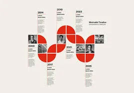

Research
Study the history, psychology, propaganda, and institutional spread of antizionism.
About
STOPAZ equips people and institutions to understand antizionism, trace its historical development, and respond effectively in contemporary public life.
Stop Antizionism is an educational, analytical, and advocacy initiative committed to exposing antizionism as the third and current era of Jew-hatred.
Its work draws on scholarship, historical analysis, and contemporary research to develop language, curricula, training, and institutional resources.
Areas of work
Study the history, psychology, propaganda, and institutional spread of antizionism.
Develop curricula and training for schools, universities, communities, and professional environments.
Provide precise terminology, historical context, and practical frameworks for institutions.
Coordinate educational programs, public events, research, and strategic collaborations.

Analytical framework
The three-era analysis connects antijudaism, antisemitism, and antizionism while distinguishing the specific language and mechanisms of each period.
View the Exhibition